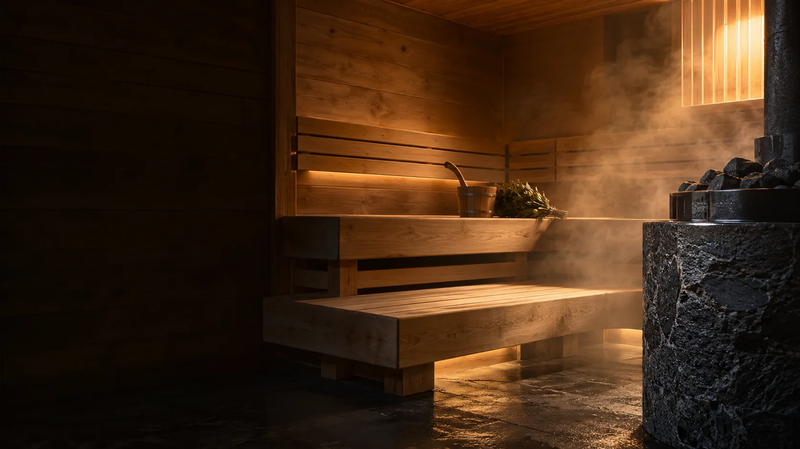
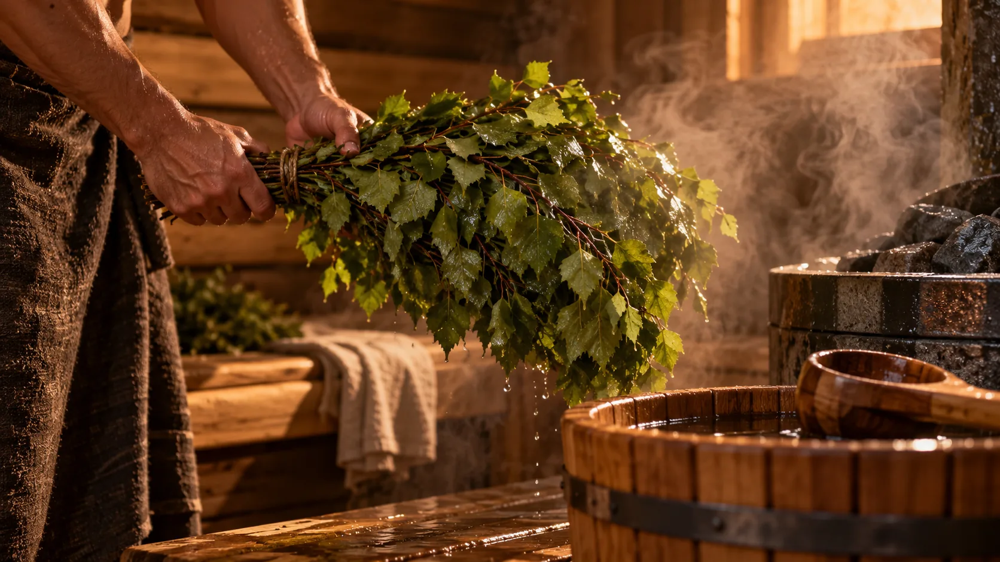

БАННЫЙ ДЕНЬ ДЛЯ ВАШЕЙ КОМПАНИИ
Частная баня
в Сочи
Пармастер ведет парение в вашем ритме. После пара можно выбрать массаж, а за столом вас ждет ужин по согласованному меню.
СОЧИ / ПО ПРЕДВАРИТЕЛЬНОЙ ДОГОВОРЕННОСТИ
ОДИН ДЕНЬ, СОБРАННЫЙ ПОД ВАС
От первого пара до ужина
До приезда согласуем площадку, программу и меню. В день бани оставим время отдохнуть между заходами и подадим ужин, когда будет удобно вашей компании.

01 БАНЯ С ПАРМАСТЕРОМ
Мягкий пар. Жар по вкусу.
Первый заход начинается с трав и знакомства с пармастером. Дальше он подбирает веники, силу пара и паузы под гостей.
Банный день
02 МАССАЖ И БАННЫЙ УХОД
Время выдохнуть
После парной можно выбрать расслабляющий массаж, теплую банную мойку или уход с солью и медом. Средства и специалиста согласуем под вашу дату.
Посмотреть процедуры
03 КУХНИ МИРА ПОД ЗАКАЗ
Вечер за своим столом
Кавказский ужин, японская или азиатская кухня. Блюда и напитки подбираем под вашу компанию, а меню и время подачи согласуем заранее.
Выбрать кухню и напиткиЧАСТНЫЙ ЗАПРОС
Ваш день в Сочи
Расскажите о дате и гостях. Подберем площадку, обсудим парение и меню, затем согласуем стоимость.
Обсудить банный день